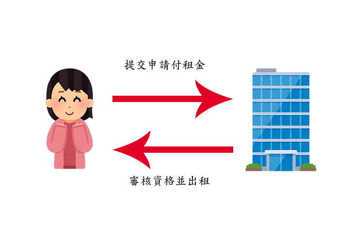

Q:社會住宅是什麼?
A:社會住宅是政府興蓋的集合住宅，於一定期間內開放申請、民眾提交申請書申請
並由政府審核之後抽籤決定順位，分別為正取、跟備取(候補)。
Q:那跟包租代管一樣嗎?同樣是出租房子?
A:最大的差別在於，社會住宅、房東及所有權都是政府
而包租代管，房東有可能是私人或企業，所有權一定是民眾持有
社會住宅對口就是，民眾跟政府，包租代管會有企業混入。
示意圖:
Q:那我可以申請社宅又申請租金補貼嗎?
A:已入住社宅的話不能重複享有"中央"的租金補貼，如:租金補貼、包租代管，如重複享有需切結並擇一
但地方性的補助還是不影響、如:中低收入租金補貼等
但尚未入住社宅，是可以先享有租金補貼或包租代管。
入住定義:正式公證簽約拿到租賃契約書。
Q:我入住社宅，之後有開放我更喜歡的社宅還能再提出申請嗎?
A:可以，入住或者遞補期間都是能申請其他社宅的，只是當遞補上新社宅時，需擇一並會有租金差異
Q:等待期間如果我租到房子，或者移居到其他縣市，也可以不要吧?
A:可以，原則上民眾不主動提出放棄並填寫放棄切結書，依然會視為有遞補資格
當後續有遞補上時，會在公文通知，確定放棄的話，可以不參加後續流程
不來的話，我們會視為放棄，並發文告知廢止民眾承租權利的公文
但如果是選好房型，或者點交前，說不要承租社宅了，會有懲罰性條款，三年內不得再申請台中市社會住宅。